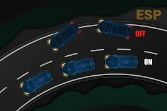
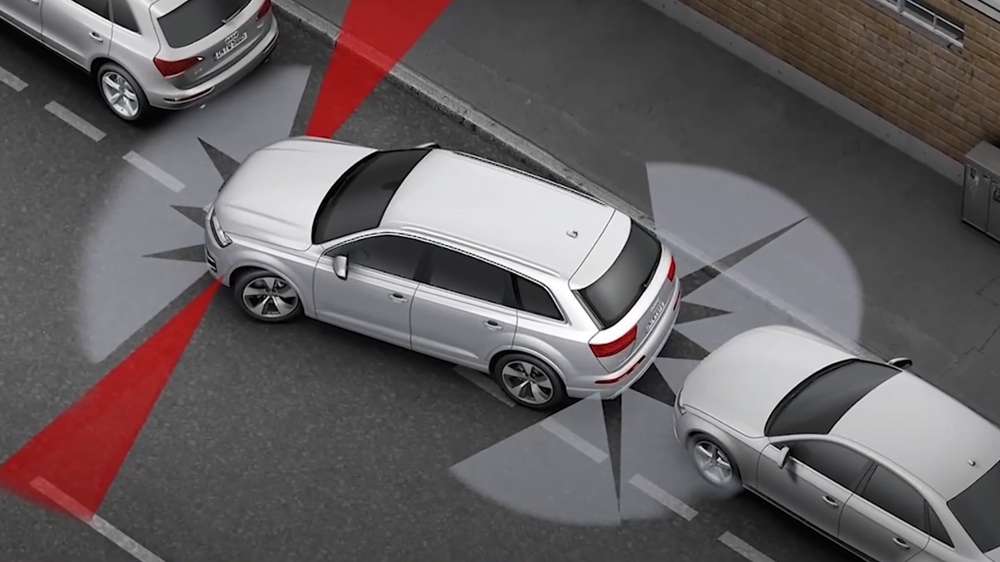
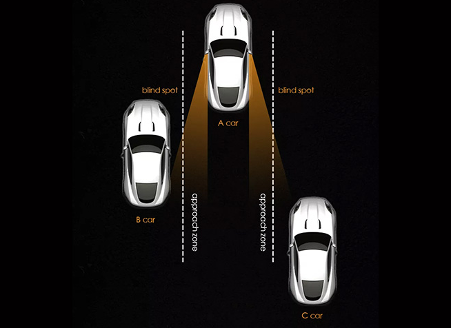
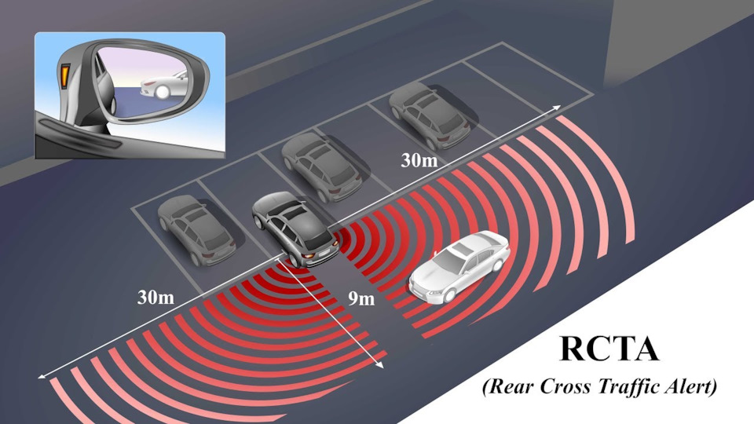
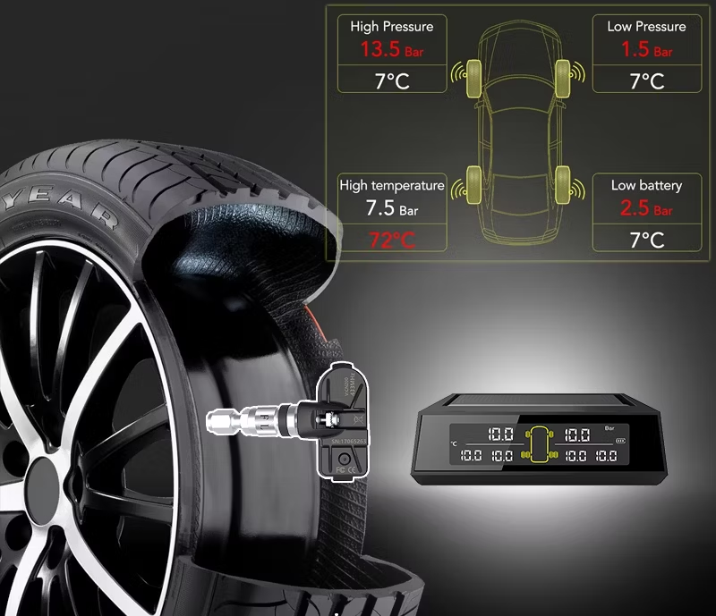
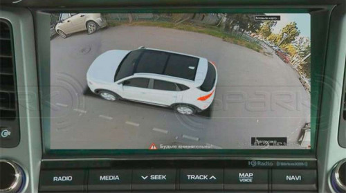
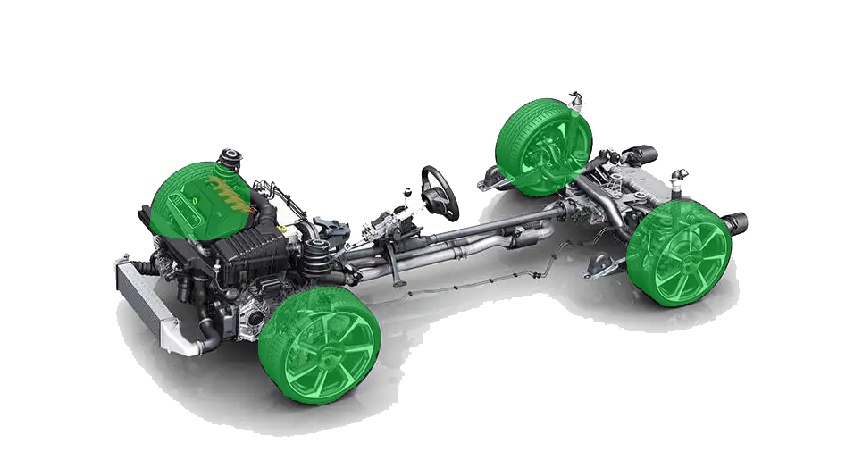

ABS (Антиблокировочная система тормозов) — предотвращает блокировку колес при торможении, улучшая управляемость на скользких покрытиях.

ESP (Электронная система стабилизации) — помогает предотвратить потерю управления и боковые скольжения, улучшая стабильность автомобиля.

ASR (Антипробуксовочная система) — предотвращает пробуксовку (прокрутка колес на одном месте) колес при старте и ускорении.
TCS (Система контроля тяги) — работает аналогично ASR, предотвращая пробуксовку колес на низком сцеплении.
ESC (Система стабилизации автомобиля) — помогает водителю контролировать машину в сложных условиях, например, на скользких дорогах.
LDW (Система предупреждения о выходе из полосы движения) — предупреждает водителя, если автомобиль начинает съезжать с полосы без включения поворотника.
LKA (Система удержания в полосе) — активно помогает водителю удерживаться в полосе движения, корректируя направление.
ACC (Адаптивный круиз-контроль) — регулирует скорость автомобиля в зависимости от дорожной ситуации, поддерживая безопасную дистанцию до впереди идущего транспортного средства.PDC (Парктроник) — система, использующая датчики для предупреждения о препятствиях при парковке.

PDC (Парктроник) — система, использующая датчики для предупреждения о препятствиях при парковке.

Blind Spot Detection (BSD) — обнаруживает автомобили в мертвых зонах и предупреждает водителя о возможной опасности при смене полосы.

Rear Cross Traffic Alert (RCTA) — предупреждает водителя о движущихся объектах позади автомобиля при выезде задним ходом.

Система контроля давления в шинах (TPMS) — мониторит давление в шинах и предупреждает водителя о падении давления.
Collision Prevention System (Система предотвращения столкновений) — использует датчики и камеры для выявления препятствий на пути автомобиля и предупреждает водителя или самостоятельно тормозит.
Система помощи при старте в гору (Hill Start Assist) — предотвращает скатывание автомобиля назад при старте на подъеме.

360° камера (или камера кругового обзора) — позволяет водителю видеть окружение автомобиля с разных ракурсов для удобной парковки и маневрирования.
Доводчики дверей – механизм плавного закрытия дверей.
Память настроек сидений – сохраняет индивидуальные настройки кресла.
Электропривод багажника – автоматическое открытие/закрытие багажника.
Active Noise Cancellation (Активная система шумоподавления) — использует специальные микрофоны и динамики для снижения внешнего шума в салоне.
Adaptive Headlights (адаптивные фары) — фары, которые подстраиваются под повороты руля, улучшая видимость в темное время суток.
Autonomous Driving (Автономное вождение) — система, которая позволяет автомобилю передвигаться без участия водителя, используя датчики и искусственный интеллект. (Проще говоря автопилот)
Drive-by-Wire (Электронное управление) — полностью заменяет механическое управление автомобилем электронными системами.
Electric Power Steering (Электроусилитель руля) — обеспечивает более точное и легкое управление автомобилем без использования гидравлического усилителя.

4WD / AWD (Полный привод / Полный привод с векторизацией) — распределяет мощность между всеми четырьмя колесами для лучшего сцепления и проходимости.
Hybrid Powertrains (Гибридные силовые установки) — сочетают бензиновый двигатель с электродвигателем для повышения эффективности и снижения выбросов.
Hydraulic Suspension (Гидравлическая подвеска) — система, регулирующая жесткость подвески для лучшего комфорта и управляемости.
Air Suspension (Пневматическая подвеска) — позволяет регулировать клиренс автомобиля и его жесткость для различных условий дороги.